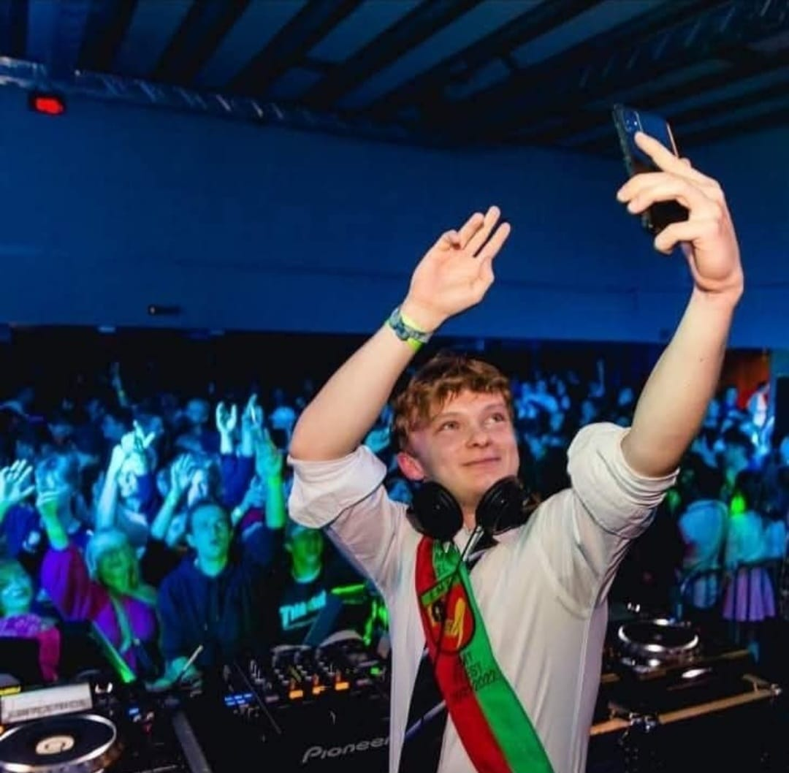
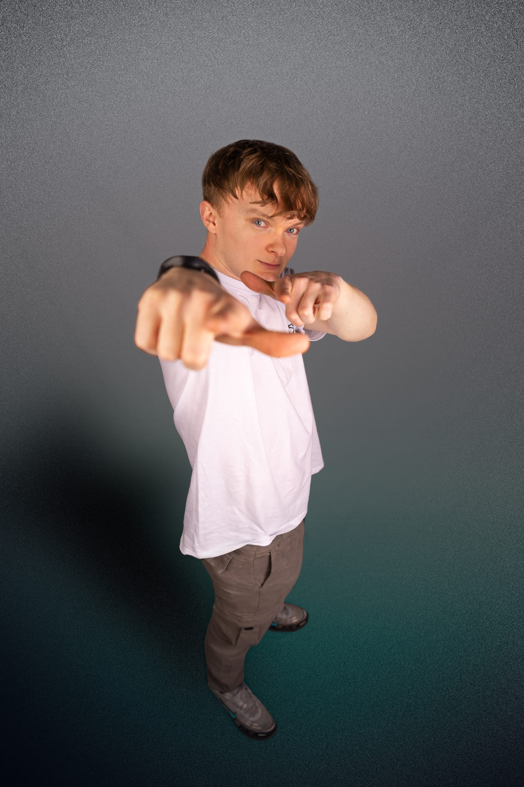
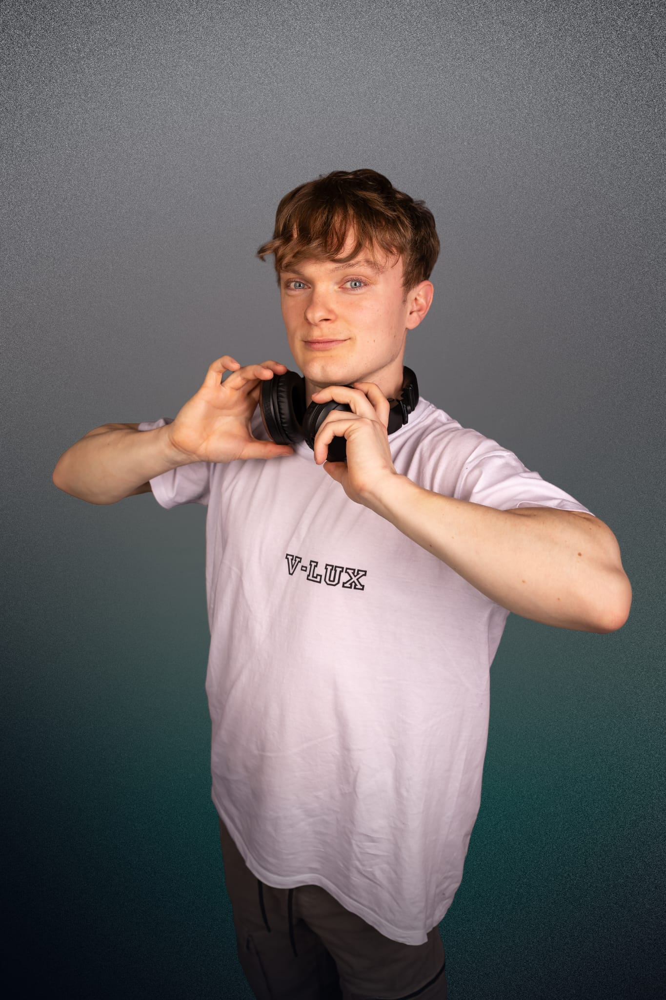
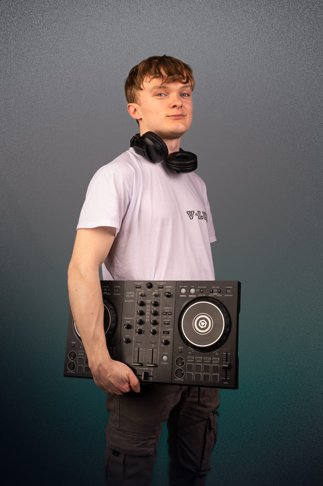
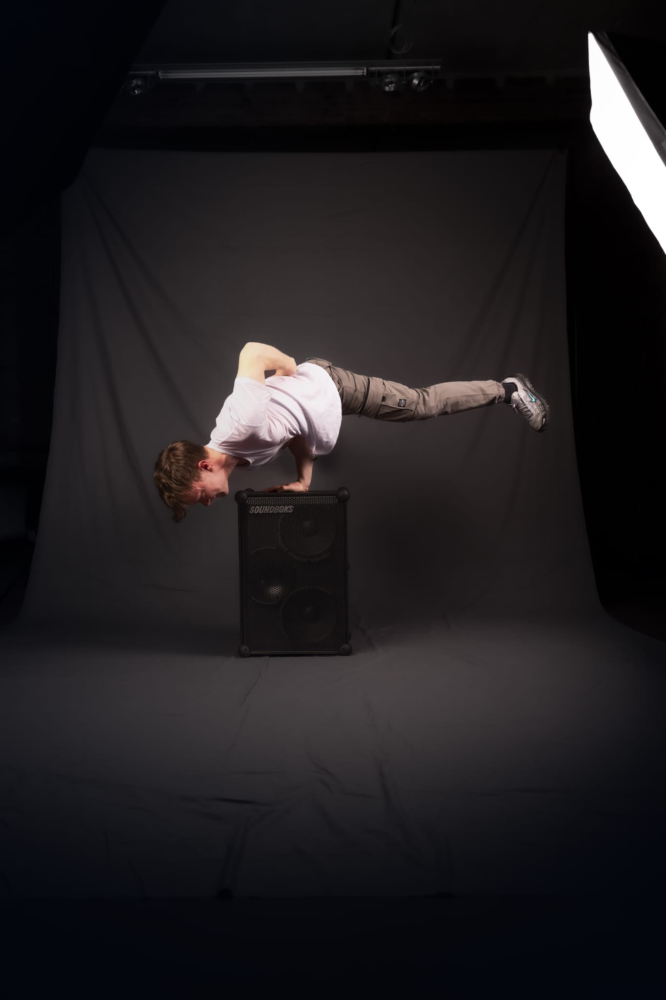
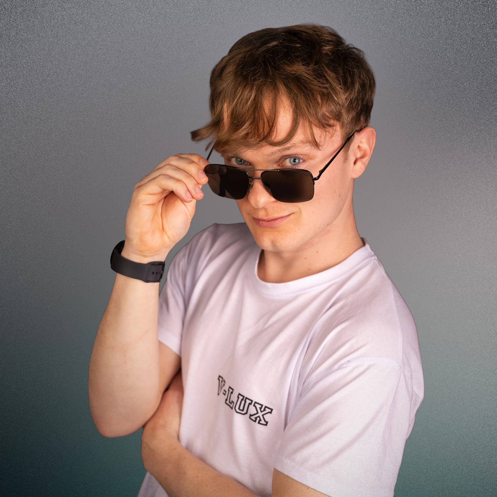
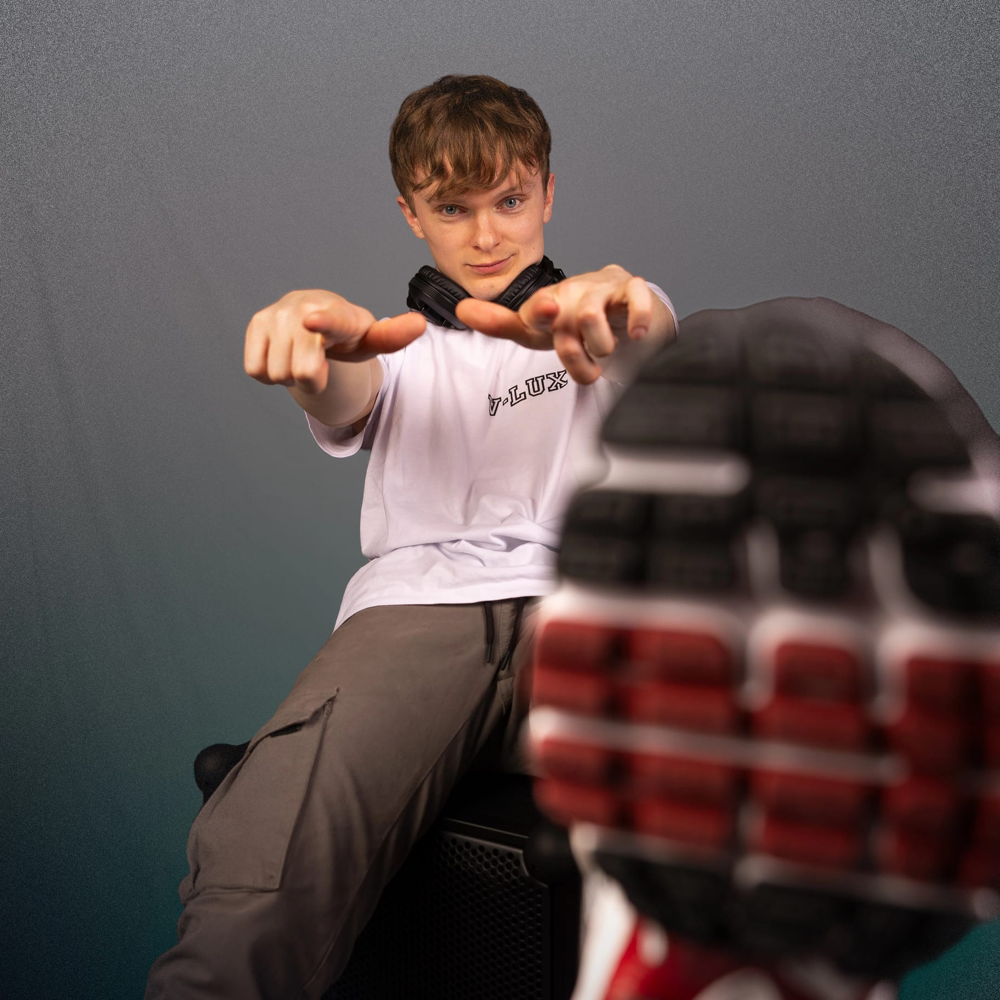

Allround DJ • Mechelen, Belgium
Genre: Allround DJ
Origin: Mechelen, Belgium
Active since: 2020
DJ V-Lux is an energetic allround DJ who gets every crowd moving. With sets packed with house, dance, commercial hits and party classics, he creates the perfect atmosphere for any event. He has performed at numerous parties across Belgium (Flemish region) and has also appeared at smaller festivals. Since 2025, DJ V-Lux has also been focusing on producing his own music, further developing his unique sound.

DJ V-Lux is a Belgian allround DJ known for his energetic sets and his instinct for playing exactly what the crowd wants to hear. With a broad musical range in genres like house, dance, commercial hits and party classics, he knows how to keep any dancefloor moving. Over the years, DJ V-Lux has performed at numerous parties and events across Belgium, building a reputation as a reliable crowd-pleaser behind the decks. He has also performed at smaller festivals such as Gladiolen, Weerdse Bierfeesten and Soirée Tropicale, where he brought his energetic style to a wider audience. In 2025, DJ V-Lux took the next step in his musical journey by starting to produce his own tracks. With this new creative direction, he is developing a recognizable sound that perfectly complements his DJ style. With a growing passion for music and a strong connection with the crowd, DJ V-Lux continues to build his name on dancefloors and at events.
     
Email:
djvlux2001@gmail.com